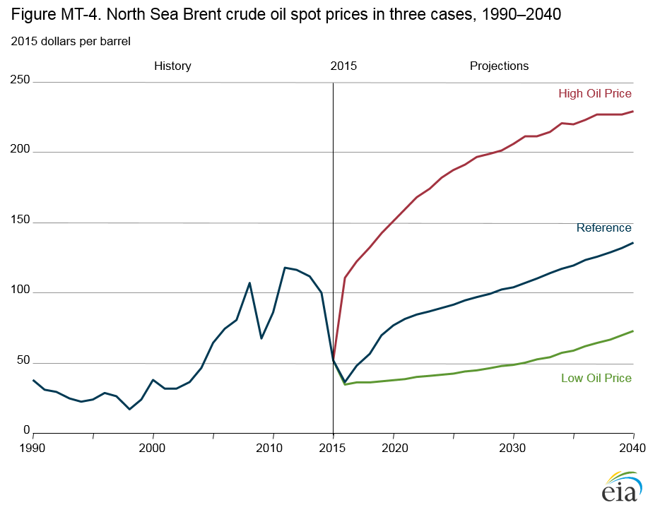
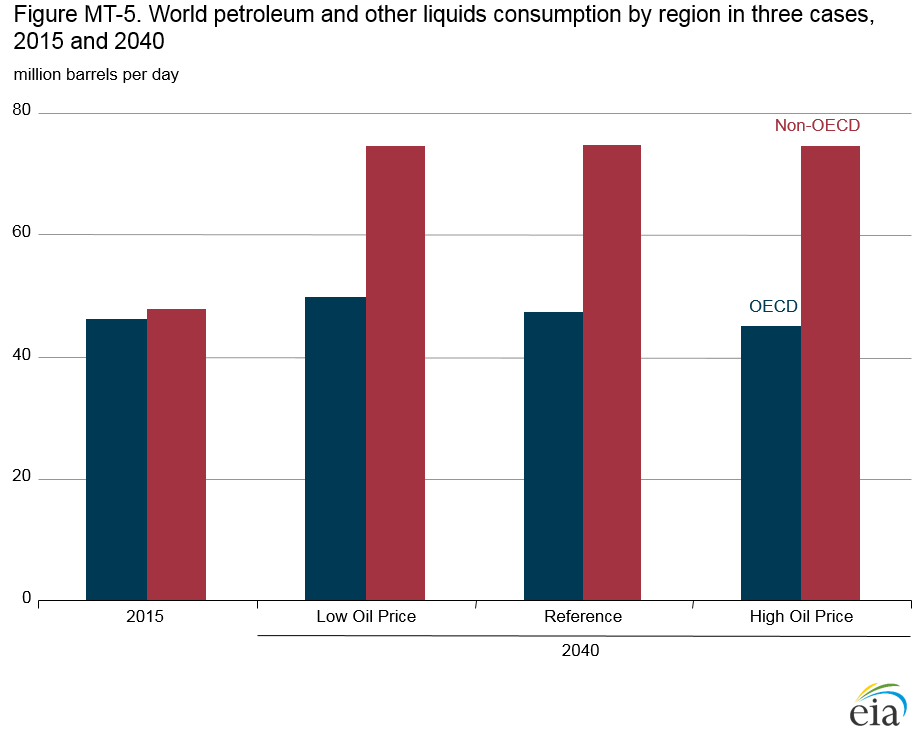
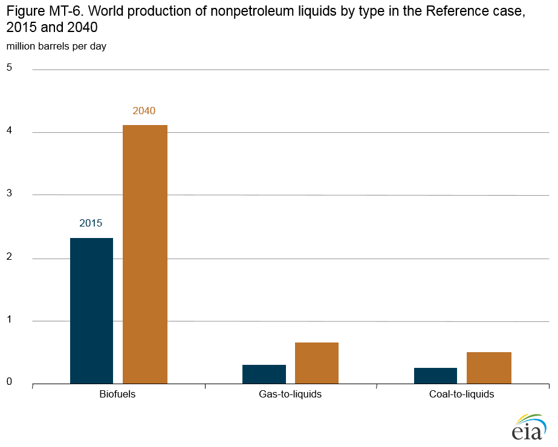
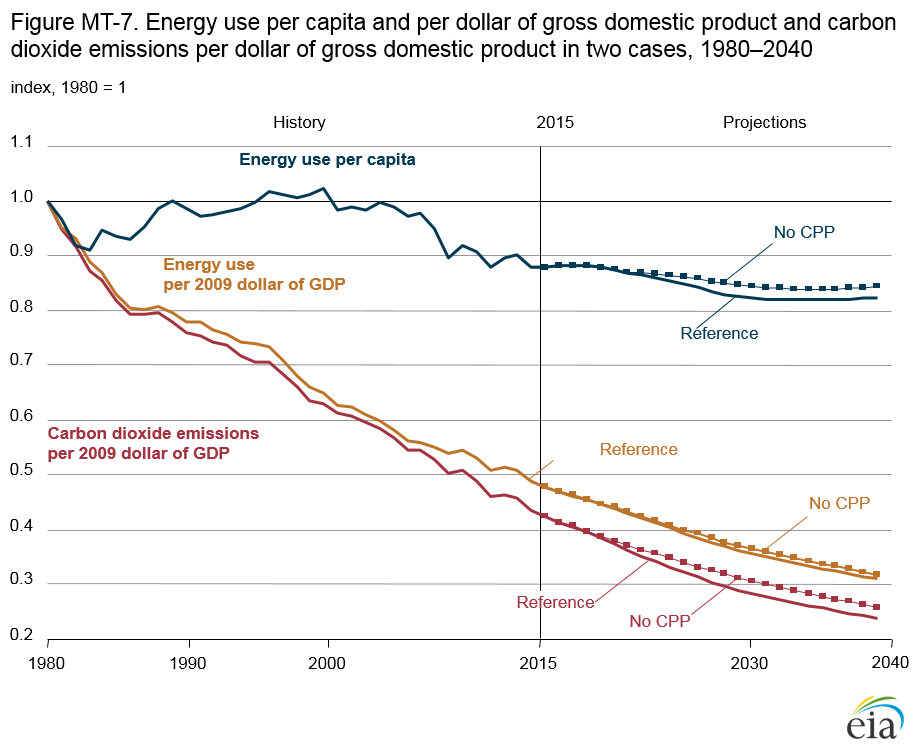

Annual Energy Outlook 2016
Full Release Date: September 15, 2016 | Next Release Date: January 2017 | full report
Market Trends: International Energy
Range of oil price cases represents uncertainty in world oil markets
In AEO2016, the North Sea Brent crude oil price is the main benchmark for world oil prices. Three oil price cases—Reference, High Oil Price, and Low Oil Price—examine the potential effects of alternative price paths on energy markets (Figure MT-4). In the Low Oil Price case, global demand for liquids is assumed to be relatively low, and supply is relatively high; in the High Oil Price case demand is high and supply is low. Crude oil prices begin rising early in the High Oil Price case and continue on an upward trend throughout the projection. The oil price cases illustrate offsetting shifts in global supply and demand that keep liquids consumption close to the Reference case levels even though prices are substantially different. In all three cases, non-Organization for Economic Cooperation and Development (non-OECD) countries account for about 60% (roughly 75 million barrels/day) of world liquids use in 2040.
The AEO2016 price cases include different assumptions about
investment and production decisions by the Organization of the
Petroleum Exporting Countries (OPEC) as well as non-OPEC
countries; about the pace of development of tight and shale oil
resources in non-OPEC countries (including the United States);
and about demand growth in China, the Middle East, and other
non-OECD countries. In the Low Oil Price case, which assumes
lower demand for liquids in non-OECD regions and more
abundant supply than in the Reference case, OPEC supplies
47% of the world’s liquid fuels in 2040, compared with 42% in
the Reference case. In the High Oil Price case, the OPEC share
of world liquids production never exceeds the 41% level reached
in 2012.

figure data
Prices, policies, technologies, and economic growth rates influence demand for liquids
In the AEO2016 Reference, High Oil Price, and Low Oil Price cases, total world consumption of petroleum and other liquids in 2040 ranges from 119 million barrels/day (b/d) to 124 million b/d (Figure MT-5). The alternative oil price cases illustrate the effects of supply differences from the Reference case that lead to substantial differences in prices while consumption remains relatively close to demand in the Reference case. Variations in liquids consumption levels among the Organization for Economic Cooperation and Development (OECD) countries are influenced primarily by oil prices. On the other hand, consumption levels in the non-OECD countries are influenced by prices, technologies, policies, and economic growth rates, resulting in nearly identical demand in the three oil price cases in 2040, at about 75 million b/d, or 60% of world liquids consumption.

figure data
In the AEO2016 High Oil Price case, stronger economic growth in the non-OECD nations leads to increased demand for liquid fuels, greater demand for personal travel, and more consumption of goods in the industrial sector. In addition, liquid fuels continue to provide the energy needed to meet growing demand in the nonmanufacturing sector, and national policies favor the use of liquids over coal for chemical feedstocks.
In the Low Oil Price case, world economic growth is slower than in the Reference case, and demand for liquid fuels is lower. OECD countries reduce energy consumption through the use of more-efficient technologies, extended corporate average fuel economy standards, less travel demand, and/or more use of natural gas or electricity in the transportation sector. In the non-OECD countries, demand for liquids in the Low Oil Price case remains relatively strong as low oil prices result in more consumption of liquid fuels relative to other energy sources.
World production of liquid fuels from biomass, coal, and natural gas increases
Nonpetroleum fuels are a small but increasing source of total liquids supply in the AEO2016 Reference case. Combined world production of biofuels, coal-to-liquids (CTL), and gas-toliquids (GTL) totaled 2.9 million barrels per day (b/d) or 3% of total world liquids production in 2015. In 2040, synthetic fuels production in the Reference case totals 5.3 million b/d, or 4% of total world liquids production (Figure MT-6). Production of these fuels is supported by high oil prices, but in the United States high prices alone are not sufficient to increase domestic production of nonpetroleum liquids. As a result, the United States produces no CTL or GTL in the Reference case. Biofuels production grows only slightly, from 1.0 million b/d in 2015 to 1.1 million b/d in 2040, and the U.S. share of world biofuels production falls from 44% in 2015 to 26% in 2040.

figure data
Biofuels development relies heavily on country-specific programs or mandates and outlooks for consumption of transportation fuels. U.S. demand for transportation fuels declines in the Reference case, and without significant additional market penetration of fuels with high-percentage ethanol blends or of drop-in fuels [7], the possibilities for expanded biofuel production are limited.
Biofuels production accounts for the largest share of total world nonpetroleum liquid fuels production throughout the projection, although its share falls from 81% in 2015 to 78% in 2040. In 2040, world biofuels production of 4.1 million b/d is more than 250% greater than world production of CTL and GTL combined.
Energy use per capita continues to decline in the Reference and No CPP cases
Population growth affects energy use through increases in housing, commercial floorspace, transportation, and economic activity. In the AEO2016 Reference case, which includes the U.S. Environmental Protection Agency’s Clean Power Plan (CPP), the U.S. population grows by 0.7%/year from 2015 to 2040; the national economy, as measured by gross domestic product (GDP), grows by an average of 2.2%/year; and total energy consumption increases by 0.4%/year. In the No CPP case, which excludes the CPP, total energy consumption grows at a faster rate of 0.5%/year. Energy intensity, measured both as energy use per capita and as energy use per dollar of GDP, declines (Figure MT-7).

figure data
The structure and efficiency of the U.S. economy are changing in ways that can lower total energy use and energy use per dollar of GDP. The service industry share of total shipments remains at or just below 77% through 2040 in the Reference case, and in the manufacturing sector output continues to shift from energyintensive industries to nonenergy-intensive industries. In the No CPP case, the manufacturing output and energy-intensive manufacturing output shares of total shipments are slightly higher than in the Reference case.
Changes in consumer behavior also affect energy consumption. The Reference case decline in energy use per capita results largely from gains in appliance efficiency, a shift in population from cooler to warmer regions, and an increase in vehicle efficiency standards combined with modest growth in travel per licensed driver. From 1970 through 2008, energy use dipped below 320 million British thermal units (Btu) per person for only a few years in the 1980s. In 2012, energy use per capita was about 300 million Btu, the lowest level since 1967; however, it has increased slightly since 2012. In the Reference case, energy use per capita in 2020 is below the 2012 level, and in 2040 it is 281 million Btu per capita. Efficiency gains in appliances reduce demand for electricity, and efficiency gains in the electric power sector also reduce overall energy intensity, as older, less efficient generators are retired as a result of slower growth in electricity demand, changing dispatch economics related to rising fuel prices, and stricter environmental regulations.
Endnotes
- The industrial sector includes manufacturing, agriculture, construction, and mining. The energy-intensive manufacturing sectors include food, paper, bulk chemicals, petroleum refining, glass, cement, steel, and aluminum.
In This Section
- Range of oil price cases represents uncertainty in world oil markets
- Prices, policies, technologies, and economic growth rates influence demand for liquids
- World production of liquid fuels from biomass, coal, and natural gas increases
- Energy use per capita continues to decline in the Reference and No CPP cases
Interactive Table Viewer ›
Provides custom data views of all AEO2016 cases. All available cases can be charted and the data for them downloaded.